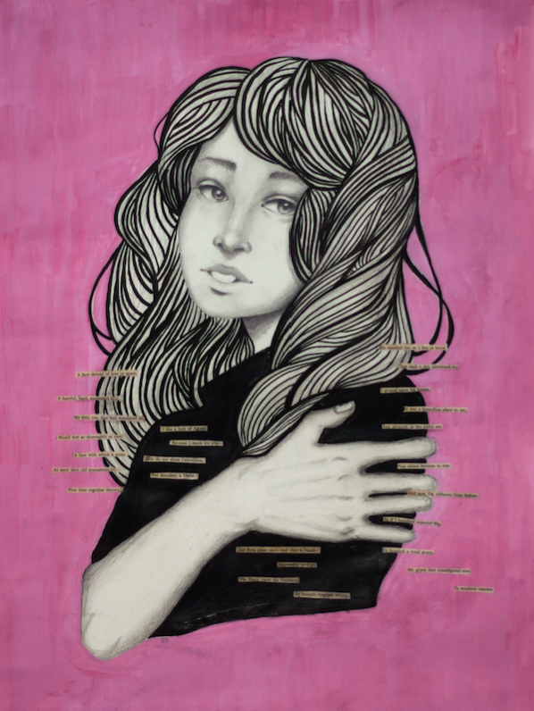
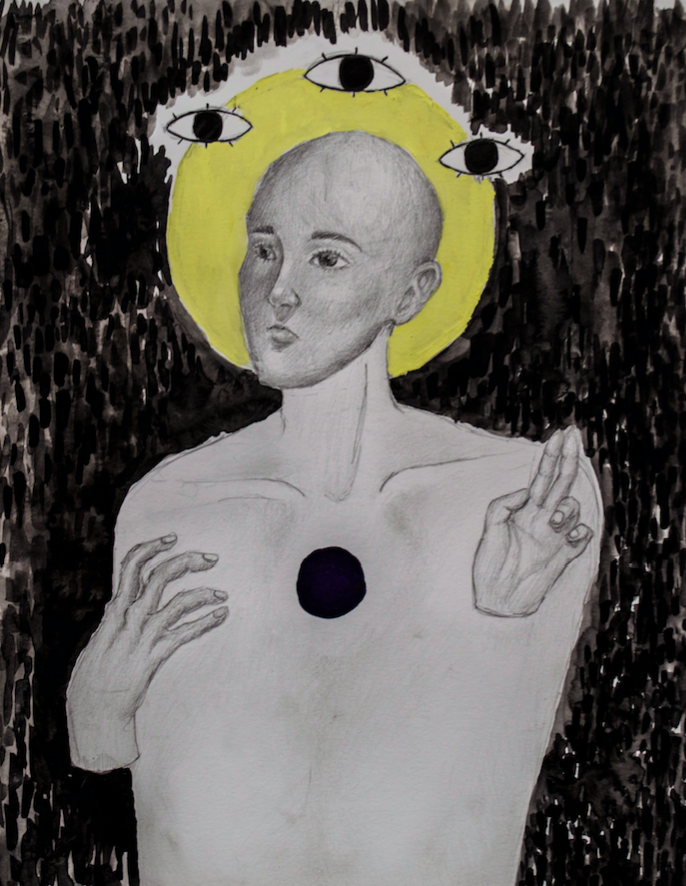
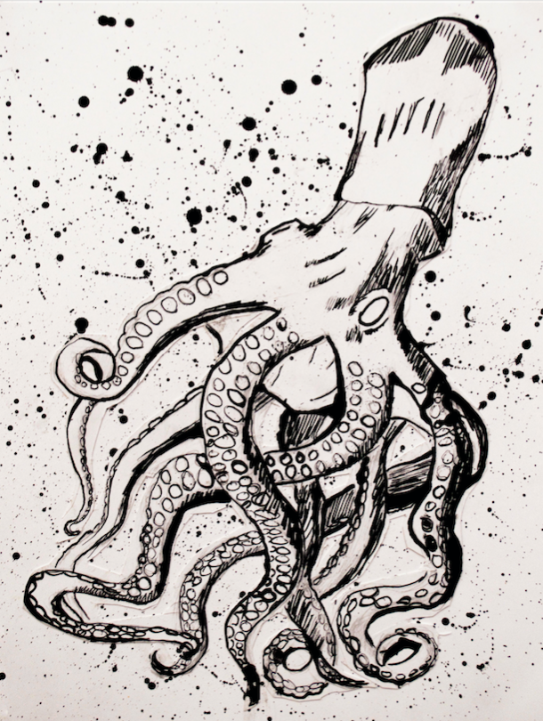
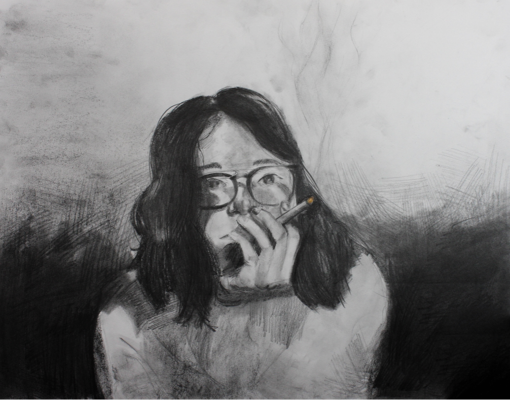
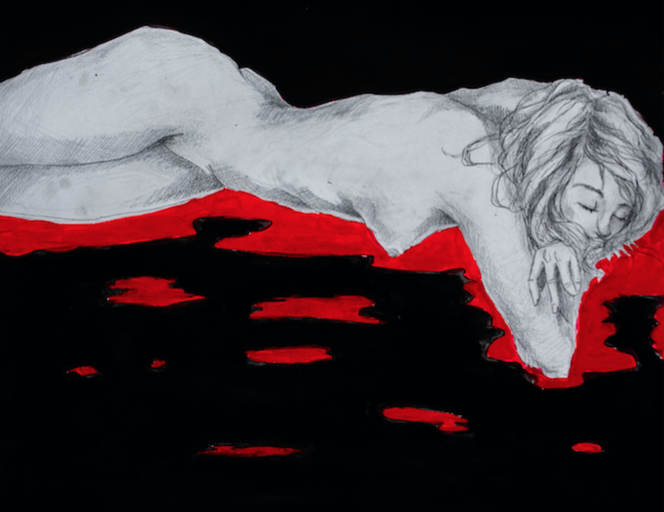

Another sleepless night.
--
18x24"
Graphite, colored pencil, and gouache.

Agony
I like a look of agony,
Because I know it’s true;
Men do not sham convulsion,
Nor simulate a throe.
The eyes glaze once, and that is death.
Impossible to feign
The beads upon the forehead
By homely anguish strung.
Emily Dickinson (1830–86)
--
18x24"
Graphite, ink, collage, and gouache.

Blasphemy
Does the pious man who sins still go to heaven?
--
9x12"
Graphite, gouache, and ink.

Squid
--
9x12"
Ink.

Saudade
sau·da·de
/sou'däde/
"a feeling of longing, melancholy, or nostalgia."
--
18x24"
Graphite, charcoal, and colored pencil.

Neglect
Another 6 hour nap.
--
9x12"
Graphite and gouache.